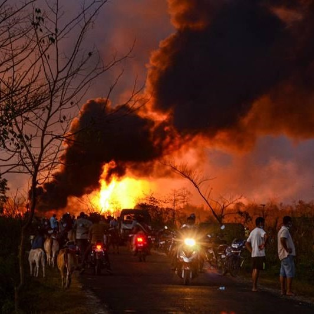

Amajor blaze at a gas well of Baghjan oil field in Assam's Tinsukia district has been "uncontrollably" spewing gas for the last 15 days. Thousands of people have been evacuated from surrounding areas while two firefighters have lost their lives. The blaze at the well is so massive that it can be seen from a distance of more than 30 km with thick black smoke going up several metres high, endangering local biodiversity at the Dibru-Saikhowa National Park following the blowout on May 27. It will take a few more weeks to douse the fire, officials said. In the meantime, firefighting operations are on and the government has announced a probe and several relief measures.
